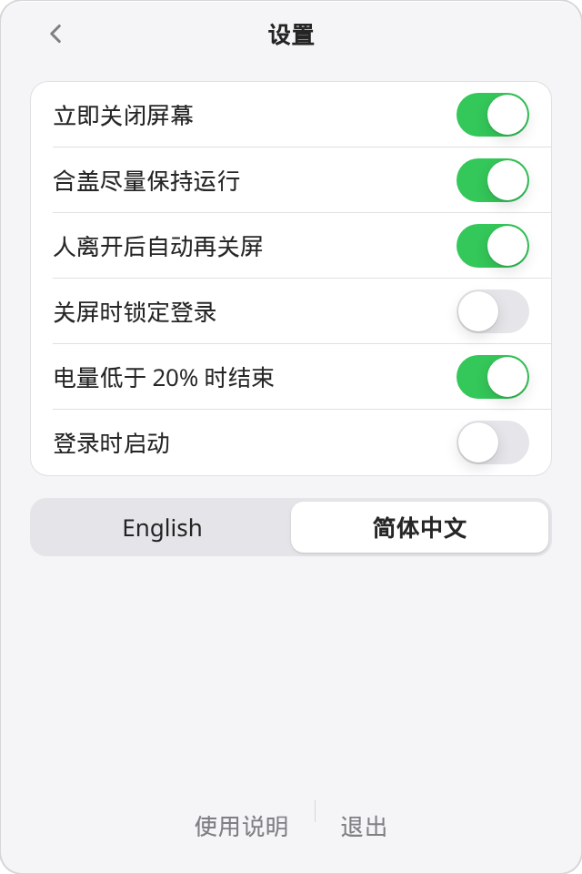
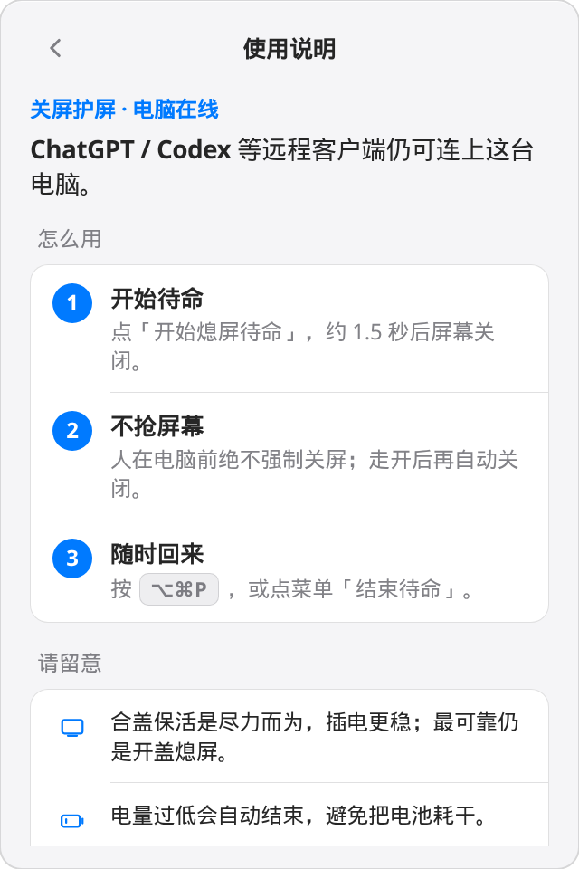

一键进入
点太阳「开始熄屏待命」。约 1.5 秒后关屏，系统保持运行。
caffeinate、KeepingYouAwake、Amphetamine 默认几乎都是屏幕也别关。这个产品把场景收成一句话：
人走了，屏幕必须灭。机器必须醒。
菜单栏、命令行和这个页面描述的是同一份约定。
点太阳「开始熄屏待命」。约 1.5 秒后关屏，系统保持运行。
HID 空闲加上盖状态判断「人在不在」。你敲键盘时绝不强制关屏。
人不在时，若 Codex 用合成事件把屏幕点亮，会再把显示器关掉。
全局快捷键 ⌥⌘P 在屏幕灭了也能按，或再点菜单里的月亮。
只用进程内 IOKit 断言。退出、崩溃、再次启动会还原合盖标志，不留脏电源策略。
never-sleep status --json 字段保持英语稳定。Codex 可以自己 never-sleep on --for 8h。
所有功能收在一个小巧、原生质感的弹出面板里。默认英语；选「简体中文」即切换。


关屏护屏 · 电脑在线。ChatGPT / Codex 等远程客户端仍可连上这台电脑。
怎么用
点「开始熄屏待命」，约 1.5 秒后屏幕关闭。
人在电脑前绝不强制关屏；走开后再自动关闭。
按 ⌥⌘P，或点菜单「结束待命」。
请留意
合盖保活是尽力而为，插电更稳；最可靠仍是开盖熄屏。
电量过低会自动结束，避免把电池耗干。
退出后立即恢复系统睡眠，不会改写节能设置。
菜单栏运行时，命令走 Unix 套接字。SSH 上没有菜单栏时，never-sleep on 会以前台占用进程，类似 caffeinate。
# 关屏待命八小时 never-sleep on --for 8h never-sleep status --json never-sleep off never-sleep doctor # 看断言、电池、合盖
和 README 同一张表——默认关屏才是产品，不是藏起来的选项。
| 熄屏待命 | caffeinate | KeepingYouAwake | Amphetamine | |
|---|---|---|---|---|
| 默认关屏 | 是，还强制关 | -i 才允许关屏 |
否 | 需改会话选项 |
| 远程点亮后再关 | 是 | 否 | 否 | 否 |
| 人在电脑前不抢屏 | 是 | 否 | 否 | 否 |
| 合盖 | 尽力而为 | -s 仅 AC |
明确不支持 | 较强，常要 Enhancer |
| 改系统电源策略 | 否 | 否 | 否 | 部分模式会 |
| JSON / Agent CLI | 是 | 否 | 否 | 否 |
和面板里「使用说明」同一口径。
关闭 MacBook 屏幕，同时保持电脑唤醒，让 ChatGPT、Codex 等远程客户端仍可连接。
不会。默认路径就是真·显示器休眠；人不在时若远程代理点亮屏幕，会再关掉。
合盖保活是尽力而为。最可靠仍是开盖熄屏。
不会。只用进程内 IOKit 断言。退出、崩溃或再次启动会还原合盖标志，不改写节能设置。
按 ⌥⌘P，点菜单「结束待命」，或运行 never-sleep off。
从 GitHub Releases 下载菜单栏应用，或在 Mac 上自行编译。
Never-Sleep-macos.zip，解压得到 Never Sleep.app。xattr -dr com.apple.quarantine "Never Sleep.app"。cargo build -p never-sleep --release ./scripts/package-macos.sh open "dist/Never Sleep.app"